Beginning of The Indian Space Odessey
Author: Akash Kumar Singh
Beginning of the Indian space Odyssey:
After the Second World war came to an end, USSR and USA had got into a technological warfare called the Cold war. Achieving pioneer success in the field of space exploration/aerospace technology was the one most emphasized upon. Nazi Germany had lost the battle, and their V2 missile technology was acquired by the USA to use it for security and aerospace applications. USSR had also got a hand on a few of the rockets and the Nazi scientists. Meanwhile, India was struggling to establish itself as an independent nation.
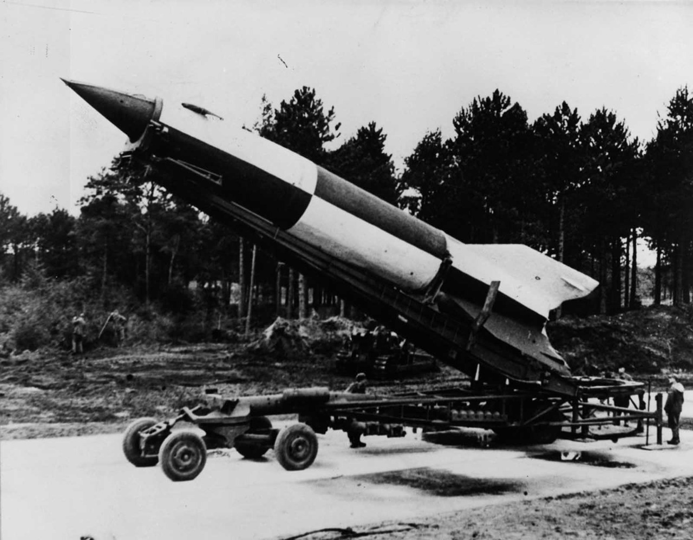The Nazi V-2 Rocket.
Scientific research had gained some momentum in India with the establishment of the Tata Institute of Fundamental Research (1945), and pioneer research work by Homi. J. Bhabha, C.V. Raman, Vikram Sarabhai and S.N. Bose had set the acumen of the fellows at the IISc, CSIR, PRL and other laboratories throughout the country.
Homi Bhabha and Vikram Sarabhai were interested in India's space program, but in the late 40s space exploration/research was thought of a privilege for only rich nations, and Indians could hardly manage to feed themselves. Technological revolution earlier was only used for destruction during the World wars; it was yet to be used to build a nation and empower its people. Both Bhabha and Sarabhai shared a similar vision. Their expectations from the Indian space program were not to compete with economically advanced countries in terms of lunar/planetary exploration or Human space flight, but to apply advanced technology to solve common man problems like agriculture, remote sensing and education.
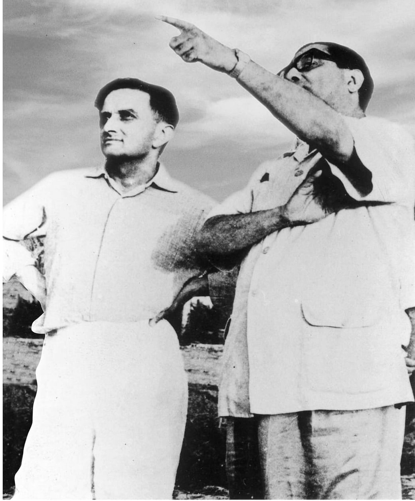Vikram sarabhai and Homi bhabha's first visit to Thumba.
Meanwhile, the USA and USSR were in an end to end competition to reach the space first and leave a footprint on those who follow. USSR developed a new series of rockets, the R series. R-1 was an exact copy of the Nazi V-2, but as time passed the Russian scientists developed R-7, " World's first Intercontinental Ballistic missile" which also served as the launch vehicle for Sputnik-I in 1957 (The first human-made satellite in space). USSR's rapid advancement was alarming for the rest of the world. Still, to Sarabhai and Bhabha, it was a relief and a source of inspiration.
India approached NASA and the French CNES for initial support and help, to which they agreed on some T&C of their own. The geomagnetic equator passes through India, which gave us a subdue advantage as it would reduce the launch cost/weight constraints by a high amount. Soon INCOSPAR was formed under the Department of Atomic energy to find a suitable launch site and get trained the scientists from NASA.
After some exploration Thumba, a Fishing village in Thiruvananthapuram was chosen as the launch site. The committee had people like A.P.J Abdul Kalam, E.V Chitnis and other members. They would become the founding members of the Indian space program. These people worked selflessly without any stipend as the Government minimal finances for the launch. The launch equipment was carried to the launching station on cycles and bullock carts.
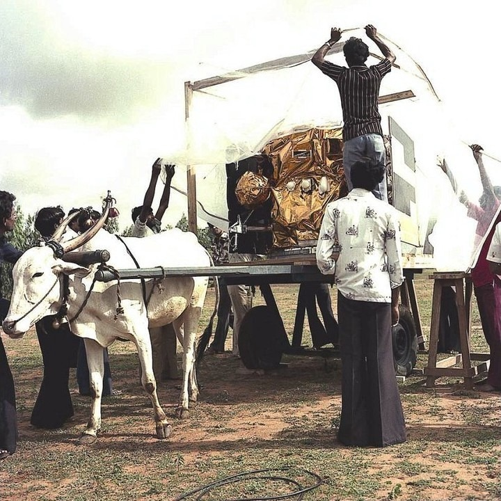
Staff carrying the launch equipment on bullock carts and cycles (due to non-availability of radiation sheilded vehicles.)
Finally, on November 21st 1963, the first sounding rocket took off from Thumba Equatorial Rocket Launching Station (TERLS) with two payloads. First being a sodium vapour payload (to study the upper atmosphere), second being a magnetometer (to check the equatorial electrojet). Following this initial success Space, Science and Technology Centre (SSTC) was set up in Thumba; Satellite Telecommunication Earth Station was set up in Ahmedabad, Sarabhai could see his vision of the space program taking its shape.
Later in the year 1967, India managed to build a sounding rocket of its own, called the ROHINI-75 and was launched from TERLS on Nov 20 the same year.
The space program soon paved its way in the international community when TERLS dedicated to the United Nations and the "Indian Space Research Organization"(ISRO) was formed under the Department of Atomic Energy (DAE) on the 22nd anniversary of India's Independence.
Just when the space program was in its full swing, all were numbed by the sad demise of Dr Vikram Sarabhai on 30th December 1971. However, the program continued under the leadership of E.V. Chitnis and A.P.J Abdul Kalam.
After gaining its identity as an organization, the ISRO started with Air-borne sensor experiments, which later paved the way for the development of thermal sensors, RADARs, photographic equipment, and an applications program was evolved around these instruments. These experiments led to the launch of Bhaskara-I and Bhaskara-II under the "Satellite for Earth Observation (SEO)" program and embarked India's entry into the remote sensing programme.
Backtracing, on June 1st, 1972, the Department of Space (DOS) and the Space commission was set up, and ISRO was brought under the DOS. All these administrative steps in the space program were right in place as Sarabhai had engineered in his mind years ago.
In 1975-76 a unique experiment called "Satellite Instructional Television Experiment (SITE)" was conducted by SAC/ISRO, utilizing the American ATS-6 satellite educational television programs were broadcasted for the first time. This initial success led to the "Satellite Telecommunications Experiments Projects (STEP)" carried out with the French-German satellite, Symphony. On April 1st 1975 ISRO became an independent government organization.
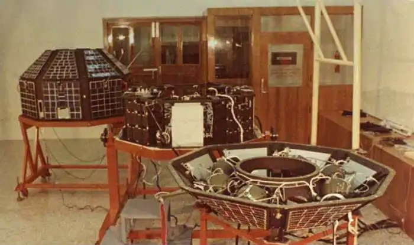Aryabhatta, the first in-house manufactured satellite of India.
On April 19th 1975 India launched its first in-house manufactured satellite, Aryabhata on a Soviet Kosmos-3M rocket from Kapustin Yar (now Volgograd space station) with experimental payloads (Xray, Aeronomy, Astronomy). Finally, India had lived its dream of launching its own satellite.
Journey of India to Space
Author: Abhishek Avadhanam
Beginning of the Indian space Odyssey:
While the Indian Space Program was deeply affected by the death of Vikram Sarabhai, the wheels he set in motion kept turning to his design. He aspired to give India the ability to Independently partake in its aerospace ventures, with the process of satellite development and launch happening domestically.
Vikram Sarabhai had arranged the formation of the Thumba Equatorial Rocket Launch Station to help India leapfrog the development of booster and aerospace technology by observing and learning from its international partners. Since the TELRLS was dedicated to the United Nations on 2 February 1968, over 2200 sounding rocket launches have taken place from it. Notable rockets that have flown from Thumba include Nike Apache, Arcas-1, Centaure-1, Dragon-1, Dual Hawk, Judy Dart, Menaka-1 and many more. All this activity was a great catalyst to the development of India's own Launch Vehicles.
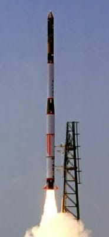ASLV,leaving the Satish dhawan space centre with a Rohini satellite on 24th march 1987.
The first domestically designed and built sounding rocket, Rohini-75, made its maiden flight on 20 November 1967. The Sriharikota Range, India's first Satellite Launch Station was set up in 1969, and it became fully operational after the launch of a RH-125 sounding rocket on 9 October 1971. After the death of Vikaram Sarabhai on 30 December 1971, TELRIS and associated space establishments at Thiruvananthapuram were renamed as the Vikram Sarabhai Space Centre in his honour.

Dr. Satish Dhawan, 4th and longest serving Chairman of ISRO
After Vikram Sarabhai's demise the mantle of ISRO's Chairman fell on Satish Dhawan, after a brief interim tenure of 9 months by M. G. K Menon. Under Satish Dhawan, India became a space-faring nation; we were only the 6th nation to do so. Satellite Launch Vehicle (SLV-3), India's first orbital booster, successfully launched from Sriharikota Range on 18 July 1980 and placed an Indian built satellite, into Low-Earth Orbit. In total there would be 4 SLV-3 launches between 1979 and 1983, out of which only two were successful. But the knowledge gained led the way to the development of future advanced launch vehicles.
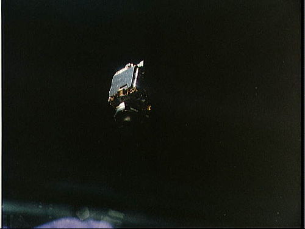INSAT- 1B, first successful communication satellite of INSAT program.
After several technology demonstrations via the Rohini, Bhaskara, APPLE and RS satellites the Indian National Satellite System was commissioned with the launch of INSAT-1B on 30 August, 1983. A previous attempt at launching INSAT-1A had been a failure. Today INSAT is the largest domestic communication system in the Indo-Pacific region. INSAT ushered a revolution in Television/Radio broadcasting, telecommunications, and meteorological sectors in India. Of 24 satellites launched via the INSAT program, 11 are still operational.
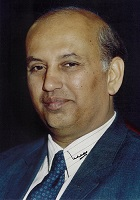Dr. U.R. Rao, 4th Chairman of ISRO
In 1984, U. R. Rao became the Chairman of ISRO. For the next ten years, he pushed for the development of domestic launch vehicles, eventually boosting India's status as a space-faring nation. But a very notable event also occurred in this time.
Wing Commander Rakesh Sharma, AC became the first Indian to travel in space when he flew aboard Soyuz T-11 on 3 April 1984. As part of the Interkosmos programme he along with his crewmembers, Yury Malyshev and Gennadi Strekalov, launched from Baikonur Cosmodrome in present-day Kazakhstan and flew through space in their Soyuz capsule toward the Salyut 7 Space Station. Rakesh Sharma proceeded to spend the next 7 days, 21 hours, and 40 minutes in the space station as a Research Cosmonaut. He conducted several experiments in biomedicine and remote sensing. Famously the crew of Salyut 7 partook in a joint television conference with Prime Minister Indira Gandhi. When she inquired about how his nation looked from outer space Wing Commander Rakesh Sharma replied "Sare Jahan Se Accha". And thus, India became the 14th nation to send its citizen to space. Upon his return on 11 April 1984, he became the only Indian to be conferred the honour of "The Hero of the Soviet Union". He and his crew were also awarded the Ashoka Chakra.
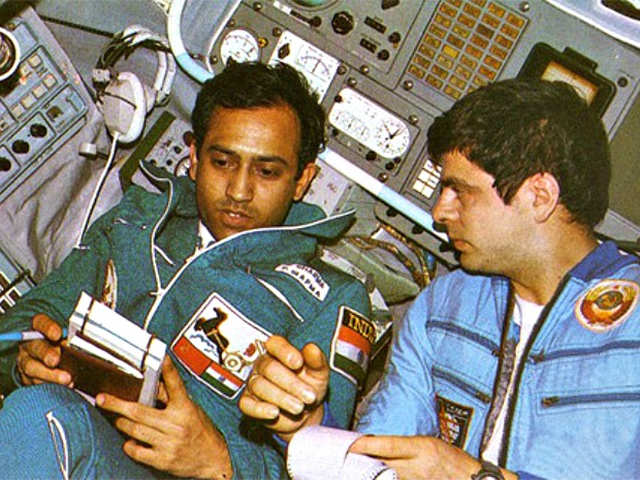Wing Commander Rakesh Sharma, First Indian Cosmonaut to travel to Space.
For ISRO, sending a man to space was the icing in the cake of all their achievements. The vision Vikram Sarabhai had dreamt all those years ago was coming together. The development of the Augmented Satellite Launch Vehicle (ASLV) started in the early 1980s in an attempt to develop a Small-Lift launch vehicle capable of placing a payload in Geostationary Orbit. The ASLV would launch four times between 1987 and 1994 from SHAR. After these initial developmental flights, ISRO had to terminate this program in favour of the PSLV due to insufficient funds.
There are various Programs and that were set in the consequent years that are still active and affect our day to day lives. These programs, which include various types of earth sensing and telecommunications satellites, are too many to be included in this article, but the chief amongst the things that were developed in the coming years were the various launch vehicles.
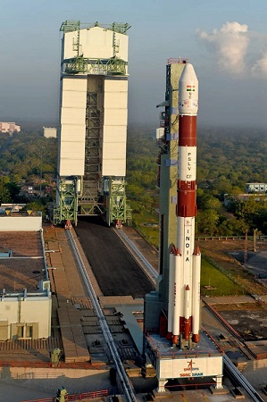The Polar satellite launch vehicle, getting launch ready at SDSC
The Polar Satellite Launch Vehicle is a medium-lift launch vehicle. The PSLV can send payloads into sun-synchronous orbits, a service that before its introduction was available commercially only via Russia. ISRO had been looking into creating such a vehicle since 1978 to launch its INSAT series satellites, and the booster it developed has a very elegant modular design, which gives the PSLV the ability to cater to a range of different mission requirements, as well as become a leading provider of rideshare services for small satellites. The first launch of PSLV occurred on 20 September 1993. Today after nearly 30 years of operational development, the PSLV is a popular launch vehicle that has launched over 50 times and has put satellites from over 33 countries into earth orbit. Famous payloads include Chandrayaan-1, Mangalyaan, Astrosat etc. A notable event was the deployment of 104 satellites via a PSLV-C37 on 15 February 2017.
The Indian Remote Sensing Programme stated on 17 March 1988 with the launch of IRA-1A. Today, the IRS system is the largest constellation of remote sensing satellites for civilian use in the world. It supports the national economy in the areas of agriculture, forestry, ecology, geology etc.
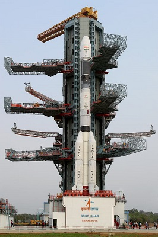GSLV Mk-II, the largest Indian satellite launch vehicle currently in operation.
The Geosynchronous Satellite Launch Vehicle (GSLV) project was initiated in 1990. The GSLV uses various proven components of the PSLV. The GSLV Mk I had a Russian built KVD-1 cryogenic engine in its third stage, it first launched on 18 April 2001. The GSLV Mk II had a domestically built CE-7.5 cryogenic engine its third stage, and it first launched on 15 April 2010. It mainly supported the launch of INSAT satellites.
The Sriharikota Range (SHAR) was renamed as the Satish Dhawan Space Centre (SDSC) in 2002 after ISRO's former Chairman, Satish Dhawan.
The GSLV Mk III is a medium-lift launch vehicle that is totally different from the similarly named GSLV Mk I/Mk II. It was primarily designed to launch communications satellites to geostationary orbit, but it has also been identified as the launch vehicle for crewed missions. After a suborbital test on 18 December 2014 which launched the Crew Module Atmospheric Re-Entry Experiment, the entire GSLV Mk III stack was successfully launched on 5 June 2017 from SDSC. Famous payloads include Chandrayaan-2 and possibly in the near future, Gaganyaan.
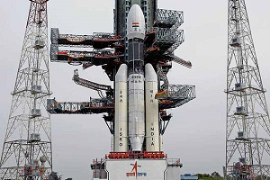 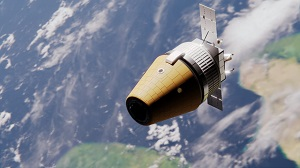GSLV MK-III (left) and Gaganyaan(right)
The future of ISRO is very exciting. It includes everything from human spaceflight, planetary sciences, astronomy to extraterrestrial exploration. Under the Indian Human Spaceflight Programme, future Indian astronauts have already been sent for training and plans for crewed missions before 2022 are underway. There are even plans for the construction of an Indian Space Station. Many new Launch Vehicles are also under development, some being commercial boosters. Under the Reusable Launch Vehicle Technology Demonstration Programme, RLV-TD was launched on 23 May 2016. The Unified Launch Vehicle (ULV) is a development project whose core objective is to design a modular architecture that could eventually replace the PSLV, GSLV Mk I/II & GSLV Mk III. New Launchpads are being constructed in SDSC, and new exciting earth sensing satellites and explorative missions like Chandrayaan-3 are under development. This is truly a very exciting time for the Indian Space Programme!
SSLV is another small lift launch vehicle currenly under developement, which would be used to place payloads(<=500kg in LEO)
Introduction to ADCS
Author: Abhishek Avadhanam
Introduction to Attitude Determination and Control Subsystem
Attitude Determination and Control refers to the process of determining the orientation of an object and bringing this object to the desired state. This task is broadly divided into two studies: Attitude Determination using Sensors and Estimation Algorithms, and Attitude Control using Actuators and Control Algorithms.
As you can probably imagine, the study of Attitude Determination and Control is not only limited to Spacecrafts but to anything that can move in 3-D space. Thus, these concepts are used in various domains like Robotics, Aircrafts, Drones, Submarines, Rockets, Satellites, Self-Driving-Cars etc. For a satellite, Attitude Determination and Control Subsystem is responsible for the stabilization and maintenance of the desired orientation of the Satellite.
To describe how an object is placed in space, three things are required:
- A Frame of Reference
- Description of its location (i.e. its Translation)
- A description of its orientation (i.e. its Attitude)
As with anything in life, proper Attitude is essential for success. In Engineering, this desired Attitude is one where the Body Fixed Frame of our object of study is aligned with a pre-defined Frame which acts as a reference. The responsibility of maintaining this Attitude falls on ADCS.
In Earth pointing satellites like ours, the Reference Frame is called the Orbital Reference Frame, which is dependent on the current position and the orbit of the Satellite. An Orbit Propagator is used to find our Translation as a function of time using initial inputs of position and velocity found using a GPS receiver.
There are various ways you can represent the Attitude of an object. For example, popular representations of Attitude include Directional Cosine Matrices, Euler Angles, Rodrigues Parameters and Quaternions. We will explore the various methods of Attitude representations, the functioning of the Orbit Propagator and the construction of this Reference Frame in future articles.
The process of finding our orientation is known as Attitude Determination. We need at least two measured vector quantities to find our Attitude. These measurements are made using sensors, which are devices that measure a physical quantity and convert it into a signal that can be read. For a Spacecraft, we have a variety of such physical quantities and corresponding sensors we can use to find our Attitude. Our choices include Sun Sensors, Star Sensors, Horizon Sensors, Magnetometers, Gyroscopes etc. The output of these sensors is fed into an Estimation Algorithm. This algorithm deals with the errors and the noise in the output of the sensors and calculates our Attitude.
The choice of Sensors and Estimation Algorithms is heavily dependent on the mission profile and stability criteria. For example, the output of a horizon sensor can change between the sunlit and eclipse regions of the orbit; the sun sensor can’t be used in the eclipse region of the orbit; a star sensor may be difficult to use in the sunlit region etc. We will study the choice of our sensors and our estimation algorithms in future articles.
The next step after Attitude Determination is Attitude Control, which is the process of bringing a system from its current state to a reference state. Attitude Control utilizes the use of a Control Algorithm, which gives a control signal as an input to an Actuator, which in turn changes the state of the system. An actuator is a device that turns a control signal into mechanical action. There are various choices of Actuators for Spacecrafts which include Reaction Wheels, Control Moment Gyros, Magnetorquers, Thrusters etc. The process of choosing appropriate actuators is very interesting as it is dependent on the weight constraints, power constraints and the mission profile of the satellite.
Various control algorithms have been developed over the years. The two broad classifications are Open Loop and Closed Loop Control Algorithms. The Output of an Open Loop Control Algorithm is not dependent on the current state of the system whereas in Closed-Loop Control Algorithms continuous or periodic measurements of the state of the system are used to calculate the control signal. We will study the choice of actuators and the development and tuning of Control Algorithms in future articles.
The development and use of these Sensors, Estimation Algorithms, Actuators and Control Algorithms requires various stages of hardware tests, and Software-In-Loop and Hardware-In-Loop Simulations.
As you will find very soon, ADCS is a fascinating subsystem that uses knowledge from various fields of engineering like Computer Science, Power Electronics, Control Systems, Estimation, Mechanical Engineering as well as core principles of Dynamics and Mathematics to help us maintain the proper Attitude of our Satellite. We are looking forward to exploring its various aspects with you.
Title: Frames of Reference
Authors: Smit Kamal and Carina
FRAMES OF REFERENCE
For a satellite to control its attitude, it needs to know its position and its orientation. Apart from this, the satellite may also require the positions and orientations of other objects in space like a star, the sun, the moon, other satellites, or other heavenly bodies in our galaxy. But how do we represent all this information?
In engineering and physics, we often deal with quantities known as vectors. Vectors are helpful as they can be used to represent a quantity with a direction and a magnitude. To record a vector, we need a frame of reference. And in this situation, where everything, from the sun to moon, earth to satellite, is not stationary, we need to be extremely careful while selecting the frames.
Considering the non-inertial nature of satellites and the heavenly bodies, it would have been ideal if we could do our observations from an inertial frame of reference as it would have eased our calculations by getting rid of the additional pseudo forces that could have been imparted from using the non-inertial frame. But as no such frame exists, so we must create our reference frames with respect to objects we can observe.
We need the following to describe a right-handed co-ordinate system:
- The fundamental plane (i.e. the X-Y place).
- The principal direction (i.e. the direction of X axis).
- The direction of Z axis.
Different frames of reference are described by the different ways these properties can be defined.
The Earth Centred Inertial (ECI) frame
The Geocentric-Equatorial Coordinate System a.k.a. the Earth-Centred Inertial frame has its origin at the centre of the earth. But this frame is not fixed to the earth as it does not rotate with the earth. The fundamental plane contains the earth’s equator, the X-axis pointing towards the vernal equinox, the Z-axis pointing towards the geographical North Pole and the Y-axis consequently completing the right-handed co-ordinate axes.
Figure 1. The Earth Centred Inertial(ECI) frame
Vernal Equinox
The vernal equinox is usually defined as “the place in the sky where the sun rises on the first day of Spring”. This definition is vague and confusing. To get a better picture of the vernal equinox, imagine the Sun’s orbit around the earth. Yes, the earth orbits the Sun, but from the point of view of the earth, the math is equally valid to say the opposite (remember the concept of relative motion?). The plane formed by the hypothetical orbit of the Sun around the earth is called the ecliptic which intersects the earth’s equatorial plane at two points, one where the Sun crosses the equator while ascending (going from the southern hemisphere to the northern), and the other one when the Sun is descending (going from the northern hemisphere to the southern). If you join these two points, you will get the nodal line for the Sun’s orbit. The Sun’s ascending node is called the Vernal Equinox.
Perifocal Frame
The Perifocal Frame is popularly known as the “natural frame” for an orbit. Its origin is at the centre of the earth. The fundamental plane (XY plane) is the orbital plane, X-axis is directed to the eccentricity vector, Z-axis is in the direction of the satellite’s angular momentum which lies perpendicular to the orbital plane, and the Y-axis completes the right-hand set of co-ordinate axis.
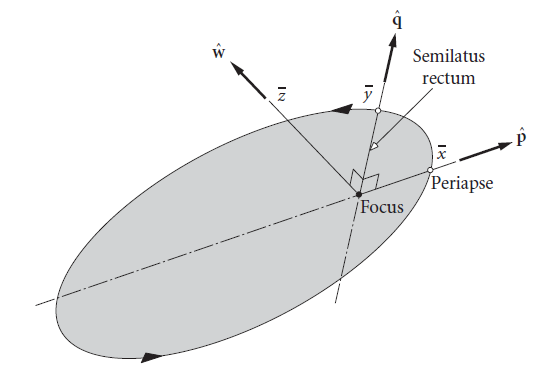Figure 2. Perifocal Frame
For our convenience we treat the ECI frame and the Perifocal Frames as Inertial Frames, this is because due to the concepts of conservation of energy and angular momentum the orbital plane and the angular momentum vectors of the earth with respect to the sun and the satellite with respect to the earth remain constant in direction for an extended period of time. But we do require the use of some non-inertial frames as well. This is because certain things (for example, the earth’s magnetic field) depend on the satellite’s with respect to the ground, and we require a body-fixed frame to analyze our satellite’s dynamics.
Earth Centred Earth Fixed (ECEF) Frame
This frame keeps on rotating with the Earth. Its origin is at the centre of the Earth, its fundamental plane (XY plane) is the Earth’s equatorial plane, the X-axis points towards the point of intersection of the prime meridian and the equator, the Z-axis points towards the geographical north pole and the Y-axis completes the right-handed set of co-ordinate axes.
The green axes in the video represent the ECEF frame.
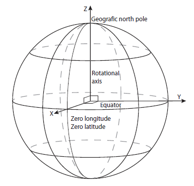Figure 3. Earth Centred Earth Fixed (ECEF) frame
Orbit Reference Frame
The orbit reference frame has its origin at the centre of mass of the satellite, the Z-axis points towards the centre of mass of the earth, the Y-axis points towards the angular momentum of the satellite in orbit, and the X-axis completes the right-hand set of co-ordinate axis. In this article, the axes of the orbit reference frame are denoted with a subscript R (XR, YR and ZR). This frame is independent of the satellite’s orientation in space.
Figure 4. Inertial frame, Orbit Reference Frame and the Satellite Body frame
The inertial frame has been denoted by the axes set XI, YI, and ZI.
Satellite Body frame
Satellite body frame is fixed to the satellite’s body, with its origin at the centre of mass of the satellite. This frame is used to represent the actual satellite in space. The XB, YB and ZB axis need to be perpendicular to each other and should be popping out of the different faces of the satellite. An example of the Satellite Body frame has been given in figure 5.
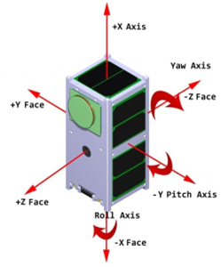Figure 5. Satellite Body Frame